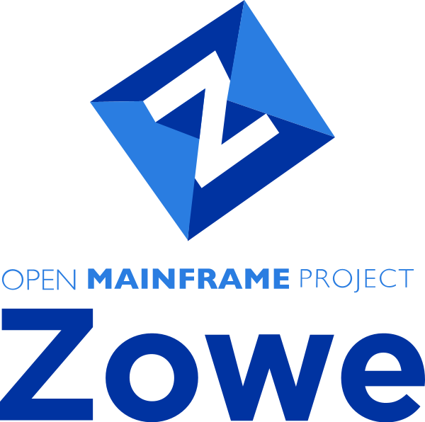

¿Qué es?:
Es la interfaz gráfica del sistema operativo z/OS, desarrollada para mejorar la experiencia de usuario,
al ser más gráfico e intuitivo, ya que no usa línea de comandos o pantallas 3270.
¿Qué incluye?:
ZOWE, que es una interfaz de línea de comandos de open source. Sólo funciona con el Sistema Operativo de z/OS.
